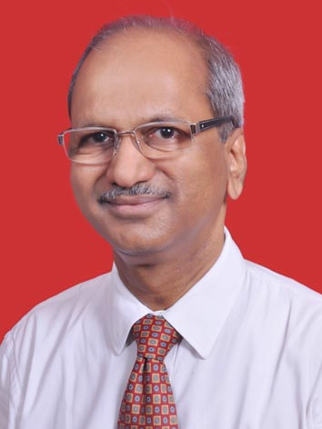

Education
- B. Tech. (Civil Engg), IIT Bombay
- M. Tech. (Struct. Engg), IIT Bombay
Fields of Practice
- Civil-Structural Engineering, Construction Project Management
Structural Rehabilitation, Professional Training and Mediation
Accreditation and Licenses
- 1. Senior Professional Engineer, Engineering Council of India & CIDC
- 2. Accreditation from Consultancy Development Center, DSIR, Ministry of
Science & Technology, Govt of India (For the Company)
- 3. Structural Engineer’s License, Municipal Corp. of Greater Mumbai
- 4. Surveyor License, Municipal Corporation of Greater Mumbai
- 5. Accredited Mediator, Indian Institute of Arbitration & Mediation
- 6. Member of India International ADR Association (IIADRA)
Professional Memberships
- 1. Advisory Trustee of the Indian Society of Structural Engineers
- 2. Fellow of the Institution of Engineers (I): Chartered Engineer
- 3. Life Member of the American Concrete Institute
- 4. Life Member of the Indian Concrete Institute
- 5. Life Member of the Association of Consulting Civil Engineers
- 6. Life Member of Indian Association for Structural Engineering
- 7. Life Member of Practicing Engr, Arch & Town Planners Association
- 8. Life Member of Indian Geotechnical Society, Mumbai Chapter
Publications
- He is a co-author of a manual of practice “Professional Services by
Structural Design Consultants” published by the Indian Society of
Structural Engineers.
Technical Papers Published
- Construction Project Management
- Title of paper : A Management Information System for
Monitoring Construction Projects
- Name of Journal/Conference : Proceedings of the Sixth
National Conference on
Construction, CIDC, New
Delhi
- Date of publication : November
2003
- Title of paper : A Model for Evaluation of Item-Rate
Bids
- Name of Journal/Conference : Proceedings of the Sixth
National Conference on
Construction, CIDC, New
Delhi
- Date of publication : November
2003
- Structural Design & Detailing
- Title of Paper : Guidelines for a Structural Engineer for
Practicing as Design Consultant
- Name of Journal/Conference : The Indian Concrete Journal
- Date of Publication : January 2002
- Title of Paper : Quick Calculations of Steel for Singly
Reinforced Section
- Name of Journal/Conference : Journal of the Indian Society
of Structural Engineers
- Date of Publication : Jan-Mar 2002
- Title of Paper : Generalized Approach for Designing RC
Beams
- Name of Journal/Conference : The Indian Concrete Journal
- Date of Publication : December
2002
- Title of Paper : Ready Formulae for Calculating stress
in Steel
- Name of Journal/Conference : Journal of the Indian Society
of Structural Engineers
- Date of Publication : Jul-Sep 2002
- Title of Paper : Effects of Distribution of Rebars on
Design of Columns
- Name of Journal/Conference : Journal of the Indian Society
of Structural Engineers
- Date of Publication : Apr-Jun 2003
- Title of Paper : Design of Simply Supported One-Way
Slab loaded by Strip Load along Span
- Name of Journal/Conference : The Indian Concrete Journal
- Date of Publication : Feb 2004
- Title of Paper : Post Tensioned Slabs
- Name of Journal/Conference : Journal of the Indian Society
of Structural Engineers
- Date of Publication : Oct-Dec 2004
- Title of Paper : Understanding Quenched & Tempered
Rebars
- Name of Journal/Conference : Journal of the Indian Society
of Structural Engineers
- Date of Publication : Oct-Dec 2006
- Title of Paper : Structural Design Using Quenched &
Tempered Rebars
- Name of Journal/Conference : Journal of the Indian Society
of Structural Engineers
- Date of Publication : Jan-Mar 2007
- Title of Paper : Corrosion of Reinforcement
- Name of Journal/Conference : Journal of the Indian Society
of Structural Engineers
- Date of Publication : Oct-Dec 2007
- Structural Assessment & Rehabilitation
- Title of Paper : Regulating Alterations within
Apartments in a Co-op Housing Society
- Name of Journal/Conference : The Indian Concrete Journal
- Date of Publication : August 2003
- Title of Paper : Seismic Assessment of Buildings: A
Suggested Methodology
- Name of Journal/Conference : The Indian Concrete Journal
- Date of Publication : August 2002,
Special Issue
- Title of Paper : Structural Rating of RC Buildings using
Qualitative Parameters
- Name of Journal/Conference : Proceedings of the 12th
Symposium on Earthquake
Engineering, IIT-Roorkee
- Date of Publication : December
2002
- Title of Paper : A Structural Distress Scenario for the
City of Mumbai
- Name of Journal/Conference : Proceedings of the National
Seminar on “Repair and
Rehabilitation of Structures”,
ACI-IC, Mumbai
- Date of Publication : January 2004
- Title of Paper : Seismic Rating of Buildings using
Qualitative Parameters
- Name of Journal/Conference : Proceedings of the
International Conference on
“Managing Seismic Risk in
Developing Countries”,
Bhopal
- Date of Publication : March 2004
- Title of Paper : A Web-Based Model for Rapid Seismic
Assessment of Buildings
- Name of Journal/Conference : Proceedings of the 19th
Indian Engineering
Congress, The Institution of
Engineers (I), Mumbai
- Date of Publication : December
2004
Seminars/Workshops
- Topic : Seismic Design and Detailing of
RCC Framed Structures
- Date : Feb 2002
- Venue : VJTI Mumbai
- Organizer : Indian Society of Structural
Engineers
- Topic : Software Tools for Structural Design
of Buildings
- Date : Feb 2003
- Venue : VJTI Mumbai
- Organizer : Indian Society of Structural
Engineers
- Topic : Seismic Aspects for Design of
Buildings
- Date : Oct 2003
- Venue : Bhiwandi
- Organizer : Municipal Corporations of Mumbai
and Bhiwandi
- Topic : Structural Audit: Methodology,
Guidelines and Related Issues
- Date : Nov 2003
- Venue : Mumbai
- Organizer : Indian Society of Structural
Engineers
- Topic : Structural Audit/ Assessment
- Date : Apr 2004
- Venue : Pune
- Organizer : Indian Society of Structural
Engineers
- Topic : Post Tensioned Slabs
- Date : Oct 2004
- Venue : Mumbai
- Organizer : Indian Society of Structural
Engineers
- Topic : Structural Audit/ Assessment
- Date : Dec 2004
- Venue : Mumbai
- Organizer : K.J. Somaiya Polytechnic
- Topic : Rapid Seismic Assessment of
Buildings
- Date : Jun 2005
- Venue : Dubai, UAE
- Organizer : Aga Khan Planning & Building
Service
- Topic : Structural Detailing In RCC
Buildings
- Date : May 2007
- Venue : Mumbai
- Organizer : Indian Society of Structural
Engineers
- Topic : Seismic Isolation and Column
shortening of High-rise
- Date : Sep 2008
- Venue : Mumbai
- Organizer : Indian Society of Structural
Engineers
- Topic : Structural Audit/ Assessment
- Date : Sep 2008
- Venue : Pune
- Organizer : Indian Society of Structural
Engineers
- Topic : Structural Audit/ Assessment
- Date : Apr 2009
- Venue : Pune
- Organizer : Sinhgad College of Engineering
- Topic : Structural Detailing Using Software
- Date : Jun 2009
- Venue : Mumbai
- Organizer : Indian Society of Structural
Engineers
- Topic : Structural Design of Multistoried
RCC Buildings
- Date : Jul 2009
- Venue : SPCE Mumbai
- Organizer : Technoesis & Sardar Patel College
of Engineering
- Topic : Design of Steel Structures Using IS
800: 2007
- Date : Nov 2009
- Venue : SPCE Mumbai
- Organizer : Technoesis & Sardar Patel College
of Engineering
- Topic : Effective Property Management in
the 21st Century
- Date : Dec 2009
- Venue : Somaiya
Mumbai
- Organizer : Technoesis
- Topic : Planning & Designing Earthquake
Resistant Buildings
- Date : Feb 2010
- Venue : IES College of
Arch. Mumbai
- Organizer : Technoesis & IES College of
Architecture
- Topic : Structural Audit & Rehabilitation of
Buildings
- Date : Mar 2010
- Venue : VJIT Mumbai
- Organizer : Technoesis
- Topic : Structural Audit/ Assessment
- Date : Mar 2010
- Venue : Mumbai
- Organizer : Technoesis
- Topic : Structural Audit/ Assessment
- Date : Feb 2011
- Venue : Pune
- Organizer : Sinhgad College of Engineering